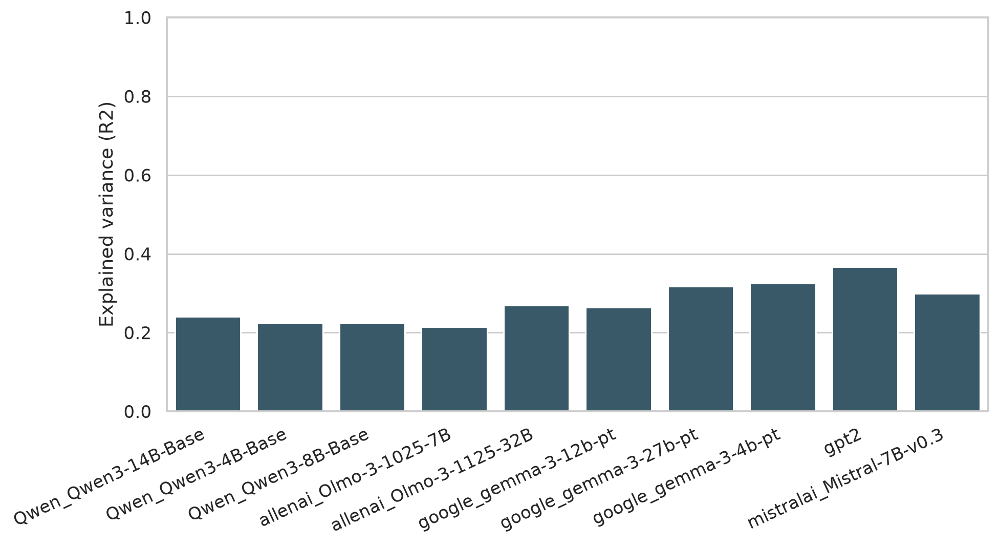
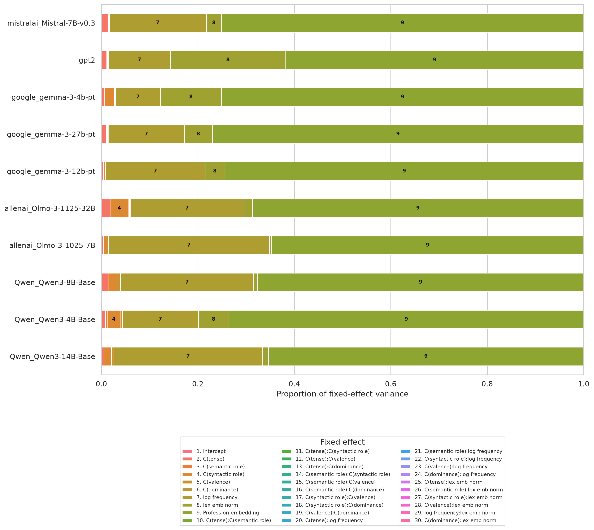
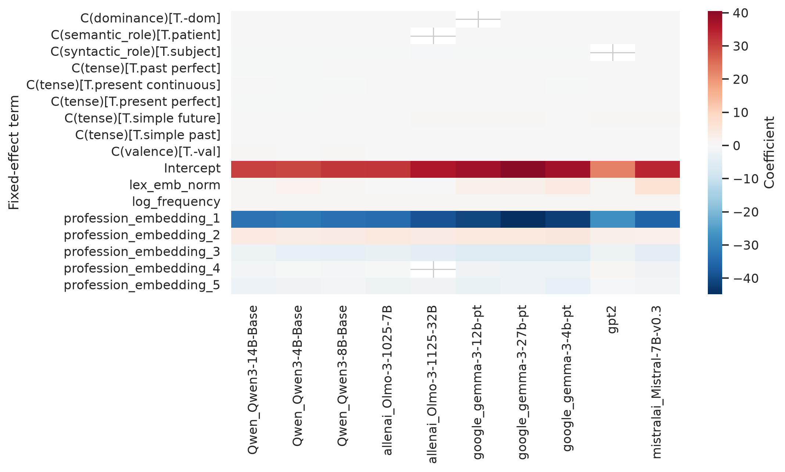

LassoCV-selected and OLS-refit models for log he/she odds. Profession is represented by a 5-dimension SVD embedding. Generated on 2026-07-23.
One final selected configuration is reported for each target model. All candidate fits remain available in all_model_metrics.csv.
| Model | Converged | N | AIC | BIC | Log likelihood | R2 | Residual variance |
|---|---|---|---|---|---|---|---|
| Qwen_Qwen3-14B-Base | True | 15360 | 51532.169 | 51662.041 | -25749.085 | 0.241 | 1.675 |
| Qwen_Qwen3-4B-Base | True | 15360 | 52133.451 | 52263.323 | -26049.725 | 0.224 | 1.742 |
| Qwen_Qwen3-8B-Base | True | 15360 | 52449.243 | 52579.115 | -26207.622 | 0.224 | 1.778 |
| allenai_Olmo-3-1025-7B | True | 15360 | 53355.828 | 53485.700 | -26660.914 | 0.215 | 1.886 |
| allenai_Olmo-3-1125-32B | True | 15360 | 54364.123 | 54478.716 | -27167.061 | 0.269 | 2.015 |
| google_gemma-3-12b-pt | True | 15360 | 49722.120 | 49844.353 | -24845.060 | 0.265 | 1.489 |
| google_gemma-3-27b-pt | True | 15360 | 49598.132 | 49728.004 | -24782.066 | 0.317 | 1.477 |
| google_gemma-3-4b-pt | True | 15360 | 46851.038 | 46980.910 | -23408.519 | 0.326 | 1.235 |
| gpt2 | True | 15360 | 42677.330 | 42799.562 | -21322.665 | 0.367 | 0.941 |
| mistralai_Mistral-7B-v0.3 | True | 15360 | 48835.270 | 48965.142 | -24400.635 | 0.299 | 1.406 |

The embedding dimensions are grouped as one predictor; they are not included in interactions. Segment numbers in the horizontal bars map to the indexed legend below the plot.
| Model | Intercept | C(tense) | C(semantic role) | C(syntactic role) | C(valence) | C(dominance) | log frequency | lex emb norm | Profession embedding | C(tense):C(semantic role) | C(tense):C(syntactic role) | C(tense):C(valence) | C(tense):C(dominance) | C(semantic role):C(syntactic role) | C(semantic role):C(valence) | C(semantic role):C(dominance) | C(syntactic role):C(valence) | C(syntactic role):C(dominance) | C(valence):C(dominance) | C(tense):log frequency | C(semantic role):log frequency | C(syntactic role):log frequency | C(valence):log frequency | C(dominance):log frequency | C(tense):lex emb norm | C(semantic role):lex emb norm | C(syntactic role):lex emb norm | C(valence):lex emb norm | log frequency:lex emb norm | C(dominance):lex emb norm |
|---|---|---|---|---|---|---|---|---|---|---|---|---|---|---|---|---|---|---|---|---|---|---|---|---|---|---|---|---|---|---|
| Qwen_Qwen3-14B-Base | 0.000 | 0.010 | 0.000 | 0.028 | 0.009 | 0.000 | 0.571 | 0.023 | 1.213 | NaN | NaN | NaN | NaN | NaN | NaN | NaN | NaN | NaN | NaN | NaN | NaN | NaN | NaN | NaN | NaN | NaN | NaN | NaN | NaN | NaN |
| Qwen_Qwen3-4B-Base | 0.000 | 0.011 | 0.006 | 0.041 | 0.005 | 0.000 | 0.229 | 0.092 | 1.066 | NaN | NaN | NaN | NaN | NaN | NaN | NaN | NaN | NaN | NaN | NaN | NaN | NaN | NaN | NaN | NaN | NaN | NaN | NaN | NaN | NaN |
| Qwen_Qwen3-8B-Base | 0.000 | 0.022 | 0.003 | 0.028 | 0.011 | 0.001 | 0.445 | 0.013 | 1.093 | NaN | NaN | NaN | NaN | NaN | NaN | NaN | NaN | NaN | NaN | NaN | NaN | NaN | NaN | NaN | NaN | NaN | NaN | NaN | NaN | NaN |
| allenai_Olmo-3-1025-7B | 0.000 | 0.008 | 0.001 | 0.014 | 0.008 | 0.000 | 0.676 | 0.009 | 1.314 | NaN | NaN | NaN | NaN | NaN | NaN | NaN | NaN | NaN | NaN | NaN | NaN | NaN | NaN | NaN | NaN | NaN | NaN | NaN | NaN | NaN |
| allenai_Olmo-3-1125-32B | 0.000 | 0.041 | NaN | 0.088 | 0.004 | 0.003 | 0.537 | 0.040 | 1.564 | NaN | NaN | NaN | NaN | NaN | NaN | NaN | NaN | NaN | NaN | NaN | NaN | NaN | NaN | NaN | NaN | NaN | NaN | NaN | NaN | NaN |
| google_gemma-3-12b-pt | 0.000 | 0.009 | 0.000 | 0.007 | 0.001 | NaN | 0.412 | 0.083 | 1.490 | NaN | NaN | NaN | NaN | NaN | NaN | NaN | NaN | NaN | NaN | NaN | NaN | NaN | NaN | NaN | NaN | NaN | NaN | NaN | NaN | NaN |
| google_gemma-3-27b-pt | 0.000 | 0.024 | 0.001 | 0.005 | 0.003 | 0.000 | 0.371 | 0.136 | 1.808 | NaN | NaN | NaN | NaN | NaN | NaN | NaN | NaN | NaN | NaN | NaN | NaN | NaN | NaN | NaN | NaN | NaN | NaN | NaN | NaN | NaN |
| google_gemma-3-4b-pt | 0.000 | 0.012 | 0.000 | 0.044 | 0.004 | 0.001 | 0.195 | 0.263 | 1.562 | NaN | NaN | NaN | NaN | NaN | NaN | NaN | NaN | NaN | NaN | NaN | NaN | NaN | NaN | NaN | NaN | NaN | NaN | NaN | NaN | NaN |
| gpt2 | 0.000 | 0.016 | 0.003 | NaN | 0.003 | 0.001 | 0.182 | 0.341 | 0.881 | NaN | NaN | NaN | NaN | NaN | NaN | NaN | NaN | NaN | NaN | NaN | NaN | NaN | NaN | NaN | NaN | NaN | NaN | NaN | NaN | NaN |
| mistralai_Mistral-7B-v0.3 | 0.000 | 0.021 | 0.000 | 0.002 | 0.001 | 0.001 | 0.314 | 0.048 | 1.168 | NaN | NaN | NaN | NaN | NaN | NaN | NaN | NaN | NaN | NaN | NaN | NaN | NaN | NaN | NaN | NaN | NaN | NaN | NaN | NaN | NaN |


| target_model | term | coef | std_err | t | p_value | ci_low | ci_high |
|---|---|---|---|---|---|---|---|
| Qwen_Qwen3-14B-Base | Intercept | 30.508 | 0.530 | 57.612 | 0.000 | 29.470 | 31.546 |
| Qwen_Qwen3-14B-Base | C(tense)[T.past perfect] | -0.157 | 0.036 | -4.352 | 0.000 | -0.228 | -0.087 |
| Qwen_Qwen3-14B-Base | C(tense)[T.present continuous] | -0.125 | 0.036 | -3.448 | 0.001 | -0.196 | -0.054 |
| Qwen_Qwen3-14B-Base | C(tense)[T.present perfect] | -0.216 | 0.036 | -5.964 | 0.000 | -0.287 | -0.145 |
| Qwen_Qwen3-14B-Base | C(tense)[T.simple future] | 0.085 | 0.036 | 2.359 | 0.018 | 0.014 | 0.156 |
| Qwen_Qwen3-14B-Base | C(tense)[T.simple past] | -0.053 | 0.036 | -1.476 | 0.140 | -0.124 | 0.018 |
| Qwen_Qwen3-14B-Base | C(semantic_role)[T.patient] | -0.004 | 0.021 | -0.208 | 0.835 | -0.045 | 0.037 |
| Qwen_Qwen3-14B-Base | C(syntactic_role)[T.subject] | -0.336 | 0.021 | -16.087 | 0.000 | -0.377 | -0.295 |
| Qwen_Qwen3-14B-Base | C(valence)[T.-val] | 0.195 | 0.021 | 9.320 | 0.000 | 0.154 | 0.236 |
| Qwen_Qwen3-14B-Base | C(dominance)[T.-dom] | -0.016 | 0.021 | -0.747 | 0.455 | -0.057 | 0.025 |
| Qwen_Qwen3-14B-Base | log_frequency | 0.336 | 0.012 | 28.557 | 0.000 | 0.313 | 0.359 |
| Qwen_Qwen3-14B-Base | lex_emb_norm | 0.654 | 0.082 | 8.014 | 0.000 | 0.494 | 0.814 |
| Qwen_Qwen3-14B-Base | profession_embedding_1 | -32.961 | 0.591 | -55.795 | 0.000 | -34.119 | -31.803 |
| Qwen_Qwen3-14B-Base | profession_embedding_2 | 4.093 | 0.102 | 40.032 | 0.000 | 3.893 | 4.294 |
| Qwen_Qwen3-14B-Base | profession_embedding_3 | -2.470 | 0.156 | -15.879 | 0.000 | -2.775 | -2.165 |
| Qwen_Qwen3-14B-Base | profession_embedding_4 | -1.388 | 0.152 | -9.118 | 0.000 | -1.686 | -1.090 |
| Qwen_Qwen3-14B-Base | profession_embedding_5 | -2.626 | 0.158 | -16.640 | 0.000 | -2.935 | -2.316 |
| Qwen_Qwen3-4B-Base | Intercept | 29.726 | 0.538 | 55.301 | 0.000 | 28.672 | 30.780 |
| Qwen_Qwen3-4B-Base | C(tense)[T.past perfect] | -0.171 | 0.037 | -4.634 | 0.000 | -0.243 | -0.099 |
| Qwen_Qwen3-4B-Base | C(tense)[T.present continuous] | -0.219 | 0.037 | -5.940 | 0.000 | -0.291 | -0.147 |
| Qwen_Qwen3-4B-Base | C(tense)[T.present perfect] | -0.270 | 0.037 | -7.332 | 0.000 | -0.343 | -0.198 |
| Qwen_Qwen3-4B-Base | C(tense)[T.simple future] | -0.017 | 0.037 | -0.449 | 0.653 | -0.089 | 0.056 |
| Qwen_Qwen3-4B-Base | C(tense)[T.simple past] | -0.029 | 0.037 | -0.774 | 0.439 | -0.101 | 0.044 |
| Qwen_Qwen3-4B-Base | C(semantic_role)[T.patient] | 0.149 | 0.021 | 7.017 | 0.000 | 0.108 | 0.191 |
| Qwen_Qwen3-4B-Base | C(syntactic_role)[T.subject] | -0.405 | 0.021 | -19.015 | 0.000 | -0.447 | -0.363 |
| Qwen_Qwen3-4B-Base | C(valence)[T.-val] | 0.135 | 0.021 | 6.319 | 0.000 | 0.093 | 0.176 |
| Qwen_Qwen3-4B-Base | C(dominance)[T.-dom] | -0.012 | 0.021 | -0.567 | 0.571 | -0.054 | 0.030 |
| Qwen_Qwen3-4B-Base | log_frequency | 0.213 | 0.010 | 21.674 | 0.000 | 0.194 | 0.232 |
| Qwen_Qwen3-4B-Base | lex_emb_norm | 1.939 | 0.103 | 18.825 | 0.000 | 1.737 | 2.141 |
| Qwen_Qwen3-4B-Base | profession_embedding_1 | -32.336 | 0.608 | -53.222 | 0.000 | -33.527 | -31.145 |
| Qwen_Qwen3-4B-Base | profession_embedding_2 | 3.271 | 0.105 | 31.172 | 0.000 | 3.066 | 3.477 |
| Qwen_Qwen3-4B-Base | profession_embedding_3 | -3.703 | 0.150 | -24.606 | 0.000 | -3.998 | -3.408 |
| Qwen_Qwen3-4B-Base | profession_embedding_4 | -0.251 | 0.148 | -1.692 | 0.091 | -0.541 | 0.040 |
| Qwen_Qwen3-4B-Base | profession_embedding_5 | -2.134 | 0.156 | -13.698 | 0.000 | -2.439 | -1.829 |
| Qwen_Qwen3-8B-Base | Intercept | 31.828 | 0.543 | 58.566 | 0.000 | 30.763 | 32.893 |
| Qwen_Qwen3-8B-Base | C(tense)[T.past perfect] | 0.141 | 0.037 | 3.794 | 0.000 | 0.068 | 0.214 |
| Qwen_Qwen3-8B-Base | C(tense)[T.present continuous] | -0.311 | 0.037 | -8.343 | 0.000 | -0.384 | -0.238 |
| Qwen_Qwen3-8B-Base | C(tense)[T.present perfect] | -0.067 | 0.037 | -1.796 | 0.073 | -0.140 | 0.006 |
| Qwen_Qwen3-8B-Base | C(tense)[T.simple future] | 0.081 | 0.037 | 2.168 | 0.030 | 0.008 | 0.154 |
| Qwen_Qwen3-8B-Base | C(tense)[T.simple past] | 0.081 | 0.037 | 2.183 | 0.029 | 0.008 | 0.154 |
| Qwen_Qwen3-8B-Base | C(semantic_role)[T.patient] | 0.101 | 0.022 | 4.703 | 0.000 | 0.059 | 0.143 |
| Qwen_Qwen3-8B-Base | C(syntactic_role)[T.subject] | -0.332 | 0.022 | -15.430 | 0.000 | -0.374 | -0.290 |
| Qwen_Qwen3-8B-Base | C(valence)[T.-val] | 0.214 | 0.022 | 9.923 | 0.000 | 0.171 | 0.256 |
| Qwen_Qwen3-8B-Base | C(dominance)[T.-dom] | -0.058 | 0.022 | -2.685 | 0.007 | -0.100 | -0.016 |
| Qwen_Qwen3-8B-Base | log_frequency | 0.297 | 0.012 | 24.468 | 0.000 | 0.273 | 0.321 |
| Qwen_Qwen3-8B-Base | lex_emb_norm | 0.459 | 0.080 | 5.722 | 0.000 | 0.302 | 0.616 |
| Qwen_Qwen3-8B-Base | profession_embedding_1 | -33.565 | 0.609 | -55.122 | 0.000 | -34.758 | -32.371 |
| Qwen_Qwen3-8B-Base | profession_embedding_2 | 3.830 | 0.106 | 36.269 | 0.000 | 3.623 | 4.037 |
| Qwen_Qwen3-8B-Base | profession_embedding_3 | -3.890 | 0.161 | -24.227 | 0.000 | -4.205 | -3.575 |
| Qwen_Qwen3-8B-Base | profession_embedding_4 | -1.069 | 0.153 | -7.000 | 0.000 | -1.369 | -0.770 |
| Qwen_Qwen3-8B-Base | profession_embedding_5 | -1.268 | 0.163 | -7.778 | 0.000 | -1.588 | -0.949 |
| allenai_Olmo-3-1025-7B | Intercept | 32.063 | 0.562 | 57.044 | 0.000 | 30.961 | 33.165 |
| allenai_Olmo-3-1025-7B | C(tense)[T.past perfect] | 0.026 | 0.038 | 0.674 | 0.501 | -0.049 | 0.101 |
| allenai_Olmo-3-1025-7B | C(tense)[T.present continuous] | -0.105 | 0.038 | -2.743 | 0.006 | -0.181 | -0.030 |
| allenai_Olmo-3-1025-7B | C(tense)[T.present perfect] | -0.054 | 0.038 | -1.405 | 0.160 | -0.129 | 0.021 |
| allenai_Olmo-3-1025-7B | C(tense)[T.simple future] | 0.185 | 0.038 | 4.822 | 0.000 | 0.110 | 0.260 |
| allenai_Olmo-3-1025-7B | C(tense)[T.simple past] | 0.003 | 0.038 | 0.079 | 0.937 | -0.072 | 0.078 |
| allenai_Olmo-3-1025-7B | C(semantic_role)[T.patient] | 0.063 | 0.022 | 2.840 | 0.005 | 0.020 | 0.106 |
| allenai_Olmo-3-1025-7B | C(syntactic_role)[T.subject] | -0.235 | 0.022 | -10.616 | 0.000 | -0.279 | -0.192 |
| allenai_Olmo-3-1025-7B | C(valence)[T.-val] | 0.175 | 0.022 | 7.886 | 0.000 | 0.131 | 0.218 |
| allenai_Olmo-3-1025-7B | C(dominance)[T.-dom] | -0.025 | 0.022 | -1.116 | 0.265 | -0.068 | 0.019 |
| allenai_Olmo-3-1025-7B | log_frequency | 0.366 | 0.009 | 41.594 | 0.000 | 0.349 | 0.383 |
| allenai_Olmo-3-1025-7B | lex_emb_norm | 0.061 | 0.008 | 7.473 | 0.000 | 0.045 | 0.077 |
| allenai_Olmo-3-1025-7B | profession_embedding_1 | -34.472 | 0.633 | -54.459 | 0.000 | -35.712 | -33.231 |
| allenai_Olmo-3-1025-7B | profession_embedding_2 | 4.292 | 0.110 | 39.154 | 0.000 | 4.077 | 4.507 |
| allenai_Olmo-3-1025-7B | profession_embedding_3 | -3.226 | 0.151 | -21.357 | 0.000 | -3.522 | -2.930 |
| allenai_Olmo-3-1025-7B | profession_embedding_4 | -0.291 | 0.153 | -1.904 | 0.057 | -0.590 | 0.009 |
| allenai_Olmo-3-1025-7B | profession_embedding_5 | -2.182 | 0.161 | -13.555 | 0.000 | -2.497 | -1.866 |
| allenai_Olmo-3-1125-32B | Intercept | 35.962 | 0.536 | 67.118 | 0.000 | 34.912 | 37.012 |
| allenai_Olmo-3-1125-32B | C(tense)[T.past perfect] | 0.013 | 0.040 | 0.327 | 0.744 | -0.065 | 0.091 |
| allenai_Olmo-3-1125-32B | C(tense)[T.present continuous] | 0.013 | 0.040 | 0.335 | 0.737 | -0.064 | 0.091 |
| allenai_Olmo-3-1125-32B | C(tense)[T.present perfect] | 0.084 | 0.040 | 2.126 | 0.034 | 0.007 | 0.162 |
| allenai_Olmo-3-1125-32B | C(tense)[T.simple future] | 0.570 | 0.040 | 14.362 | 0.000 | 0.492 | 0.648 |
| allenai_Olmo-3-1125-32B | C(tense)[T.simple past] | 0.058 | 0.040 | 1.474 | 0.140 | -0.019 | 0.136 |
| allenai_Olmo-3-1125-32B | C(syntactic_role)[T.subject] | -0.594 | 0.023 | -25.935 | 0.000 | -0.639 | -0.549 |
| allenai_Olmo-3-1125-32B | C(valence)[T.-val] | 0.128 | 0.023 | 5.603 | 0.000 | 0.083 | 0.173 |
| allenai_Olmo-3-1125-32B | C(dominance)[T.-dom] | -0.109 | 0.023 | -4.750 | 0.000 | -0.154 | -0.064 |
| allenai_Olmo-3-1125-32B | log_frequency | 0.326 | 0.009 | 35.002 | 0.000 | 0.308 | 0.344 |
| allenai_Olmo-3-1125-32B | lex_emb_norm | 0.098 | 0.007 | 14.132 | 0.000 | 0.084 | 0.111 |
| allenai_Olmo-3-1125-32B | profession_embedding_1 | -38.608 | 0.611 | -63.206 | 0.000 | -39.806 | -37.411 |
| allenai_Olmo-3-1125-32B | profession_embedding_2 | 3.790 | 0.111 | 34.166 | 0.000 | 3.572 | 4.007 |
| allenai_Olmo-3-1125-32B | profession_embedding_3 | -4.238 | 0.147 | -28.897 | 0.000 | -4.525 | -3.950 |
| allenai_Olmo-3-1125-32B | profession_embedding_5 | -2.105 | 0.166 | -12.670 | 0.000 | -2.431 | -1.780 |
| google_gemma-3-12b-pt | Intercept | 37.376 | 0.527 | 70.974 | 0.000 | 36.344 | 38.408 |
| google_gemma-3-12b-pt | C(tense)[T.past perfect] | 0.118 | 0.034 | 3.461 | 0.001 | 0.051 | 0.185 |
| google_gemma-3-12b-pt | C(tense)[T.present continuous] | -0.007 | 0.034 | -0.210 | 0.834 | -0.074 | 0.060 |
| google_gemma-3-12b-pt | C(tense)[T.present perfect] | 0.075 | 0.034 | 2.209 | 0.027 | 0.009 | 0.142 |
| google_gemma-3-12b-pt | C(tense)[T.simple future] | 0.279 | 0.034 | 8.166 | 0.000 | 0.212 | 0.345 |
| google_gemma-3-12b-pt | C(tense)[T.simple past] | 0.087 | 0.034 | 2.561 | 0.010 | 0.021 | 0.154 |
| google_gemma-3-12b-pt | C(semantic_role)[T.patient] | -0.015 | 0.020 | -0.772 | 0.440 | -0.054 | 0.023 |
| google_gemma-3-12b-pt | C(syntactic_role)[T.subject] | -0.172 | 0.020 | -8.750 | 0.000 | -0.211 | -0.134 |
| google_gemma-3-12b-pt | C(valence)[T.-val] | 0.070 | 0.020 | 3.563 | 0.000 | 0.032 | 0.109 |
| google_gemma-3-12b-pt | log_frequency | 0.286 | 0.009 | 32.359 | 0.000 | 0.268 | 0.303 |
| google_gemma-3-12b-pt | lex_emb_norm | 2.242 | 0.141 | 15.907 | 0.000 | 1.966 | 2.519 |
| google_gemma-3-12b-pt | profession_embedding_1 | -41.161 | 0.624 | -66.016 | 0.000 | -42.384 | -39.939 |
| google_gemma-3-12b-pt | profession_embedding_2 | 4.233 | 0.099 | 42.609 | 0.000 | 4.039 | 4.428 |
| google_gemma-3-12b-pt | profession_embedding_3 | -5.538 | 0.151 | -36.728 | 0.000 | -5.834 | -5.243 |
| google_gemma-3-12b-pt | profession_embedding_4 | -2.141 | 0.152 | -14.131 | 0.000 | -2.438 | -1.844 |
| google_gemma-3-12b-pt | profession_embedding_5 | -3.001 | 0.146 | -20.561 | 0.000 | -3.287 | -2.715 |
| google_gemma-3-27b-pt | Intercept | 40.578 | 0.526 | 77.121 | 0.000 | 39.547 | 41.610 |
| google_gemma-3-27b-pt | C(tense)[T.past perfect] | 0.080 | 0.034 | 2.365 | 0.018 | 0.014 | 0.147 |
| google_gemma-3-27b-pt | C(tense)[T.present continuous] | -0.075 | 0.034 | -2.210 | 0.027 | -0.142 | -0.008 |
| google_gemma-3-27b-pt | C(tense)[T.present perfect] | 0.055 | 0.034 | 1.616 | 0.106 | -0.012 | 0.121 |
| google_gemma-3-27b-pt | C(tense)[T.simple future] | 0.419 | 0.034 | 12.339 | 0.000 | 0.353 | 0.486 |
| google_gemma-3-27b-pt | C(tense)[T.simple past] | 0.103 | 0.034 | 3.026 | 0.002 | 0.036 | 0.169 |
| google_gemma-3-27b-pt | C(semantic_role)[T.patient] | 0.052 | 0.020 | 2.647 | 0.008 | 0.013 | 0.090 |
| google_gemma-3-27b-pt | C(syntactic_role)[T.subject] | -0.147 | 0.020 | -7.500 | 0.000 | -0.186 | -0.109 |
| google_gemma-3-27b-pt | C(valence)[T.-val] | 0.112 | 0.020 | 5.711 | 0.000 | 0.074 | 0.150 |
| google_gemma-3-27b-pt | C(dominance)[T.-dom] | -0.012 | 0.020 | -0.599 | 0.549 | -0.050 | 0.027 |
| google_gemma-3-27b-pt | log_frequency | 0.271 | 0.009 | 30.835 | 0.000 | 0.254 | 0.288 |
| google_gemma-3-27b-pt | lex_emb_norm | 2.677 | 0.131 | 20.390 | 0.000 | 2.420 | 2.935 |
| google_gemma-3-27b-pt | profession_embedding_1 | -44.876 | 0.623 | -72.005 | 0.000 | -46.097 | -43.654 |
| google_gemma-3-27b-pt | profession_embedding_2 | 4.278 | 0.099 | 43.162 | 0.000 | 4.084 | 4.472 |
| google_gemma-3-27b-pt | profession_embedding_3 | -5.496 | 0.150 | -36.593 | 0.000 | -5.791 | -5.202 |
| google_gemma-3-27b-pt | profession_embedding_4 | -2.562 | 0.151 | -16.924 | 0.000 | -2.859 | -2.265 |
| google_gemma-3-27b-pt | profession_embedding_5 | -2.577 | 0.145 | -17.733 | 0.000 | -2.862 | -2.292 |
| google_gemma-3-4b-pt | Intercept | 37.533 | 0.482 | 77.817 | 0.000 | 36.588 | 38.479 |
| google_gemma-3-4b-pt | C(tense)[T.past perfect] | -0.004 | 0.031 | -0.124 | 0.901 | -0.065 | 0.057 |
| google_gemma-3-4b-pt | C(tense)[T.present continuous] | -0.234 | 0.031 | -7.535 | 0.000 | -0.295 | -0.173 |
| google_gemma-3-4b-pt | C(tense)[T.present perfect] | -0.120 | 0.031 | -3.858 | 0.000 | -0.181 | -0.059 |
| google_gemma-3-4b-pt | C(tense)[T.simple future] | 0.124 | 0.031 | 4.000 | 0.000 | 0.063 | 0.185 |
| google_gemma-3-4b-pt | C(tense)[T.simple past] | -0.062 | 0.031 | -2.006 | 0.045 | -0.123 | -0.001 |
| google_gemma-3-4b-pt | C(semantic_role)[T.patient] | -0.021 | 0.018 | -1.164 | 0.245 | -0.056 | 0.014 |
| google_gemma-3-4b-pt | C(syntactic_role)[T.subject] | -0.419 | 0.018 | -23.370 | 0.000 | -0.454 | -0.384 |
| google_gemma-3-4b-pt | C(valence)[T.-val] | 0.120 | 0.018 | 6.674 | 0.000 | 0.085 | 0.155 |
| google_gemma-3-4b-pt | C(dominance)[T.-dom] | 0.045 | 0.018 | 2.536 | 0.011 | 0.010 | 0.081 |
| google_gemma-3-4b-pt | log_frequency | 0.196 | 0.008 | 24.404 | 0.000 | 0.181 | 0.212 |
| google_gemma-3-4b-pt | lex_emb_norm | 3.909 | 0.127 | 30.794 | 0.000 | 3.660 | 4.158 |
| google_gemma-3-4b-pt | profession_embedding_1 | -42.197 | 0.571 | -73.867 | 0.000 | -43.317 | -41.078 |
| google_gemma-3-4b-pt | profession_embedding_2 | 4.588 | 0.091 | 50.665 | 0.000 | 4.411 | 4.766 |
| google_gemma-3-4b-pt | profession_embedding_3 | -5.707 | 0.137 | -41.566 | 0.000 | -5.977 | -5.438 |
| google_gemma-3-4b-pt | profession_embedding_4 | -2.488 | 0.139 | -17.890 | 0.000 | -2.761 | -2.215 |
| google_gemma-3-4b-pt | profession_embedding_5 | -3.724 | 0.133 | -28.036 | 0.000 | -3.984 | -3.463 |
| gpt2 | Intercept | 22.510 | 0.396 | 56.821 | 0.000 | 21.733 | 23.286 |
| gpt2 | C(tense)[T.past perfect] | 0.048 | 0.027 | 1.763 | 0.078 | -0.005 | 0.101 |
| gpt2 | C(tense)[T.present continuous] | 0.179 | 0.027 | 6.589 | 0.000 | 0.126 | 0.232 |
| gpt2 | C(tense)[T.present perfect] | -0.088 | 0.027 | -3.252 | 0.001 | -0.141 | -0.035 |
| gpt2 | C(tense)[T.simple future] | 0.292 | 0.027 | 10.780 | 0.000 | 0.239 | 0.345 |
| gpt2 | C(tense)[T.simple past] | 0.025 | 0.027 | 0.920 | 0.358 | -0.028 | 0.078 |
| gpt2 | C(semantic_role)[T.patient] | -0.101 | 0.016 | -6.421 | 0.000 | -0.131 | -0.070 |
| gpt2 | C(valence)[T.-val] | 0.101 | 0.016 | 6.426 | 0.000 | 0.070 | 0.131 |
| gpt2 | C(dominance)[T.-dom] | -0.048 | 0.016 | -3.061 | 0.002 | -0.079 | -0.017 |
| gpt2 | log_frequency | 0.190 | 0.006 | 29.252 | 0.000 | 0.177 | 0.203 |
| gpt2 | lex_emb_norm | 1.166 | 0.021 | 55.969 | 0.000 | 1.125 | 1.207 |
| gpt2 | profession_embedding_1 | -27.352 | 0.451 | -60.632 | 0.000 | -28.236 | -26.467 |
| gpt2 | profession_embedding_2 | 2.571 | 0.078 | 33.088 | 0.000 | 2.419 | 2.724 |
| gpt2 | profession_embedding_3 | -2.476 | 0.109 | -22.639 | 0.000 | -2.691 | -2.262 |
| gpt2 | profession_embedding_4 | 0.668 | 0.109 | 6.144 | 0.000 | 0.455 | 0.881 |
| gpt2 | profession_embedding_5 | -0.650 | 0.114 | -5.720 | 0.000 | -0.873 | -0.428 |
| mistralai_Mistral-7B-v0.3 | Intercept | 34.229 | 0.497 | 68.844 | 0.000 | 33.254 | 35.203 |
| mistralai_Mistral-7B-v0.3 | C(tense)[T.past perfect] | 0.043 | 0.033 | 1.301 | 0.193 | -0.022 | 0.108 |
| mistralai_Mistral-7B-v0.3 | C(tense)[T.present continuous] | 0.064 | 0.033 | 1.926 | 0.054 | -0.001 | 0.129 |
| mistralai_Mistral-7B-v0.3 | C(tense)[T.present perfect] | 0.058 | 0.033 | 1.757 | 0.079 | -0.007 | 0.123 |
| mistralai_Mistral-7B-v0.3 | C(tense)[T.simple future] | 0.405 | 0.033 | 12.227 | 0.000 | 0.340 | 0.470 |
| mistralai_Mistral-7B-v0.3 | C(tense)[T.simple past] | -0.034 | 0.033 | -1.013 | 0.311 | -0.099 | 0.031 |
| mistralai_Mistral-7B-v0.3 | C(semantic_role)[T.patient] | 0.031 | 0.019 | 1.632 | 0.103 | -0.006 | 0.069 |
| mistralai_Mistral-7B-v0.3 | C(syntactic_role)[T.subject] | -0.079 | 0.019 | -4.142 | 0.000 | -0.117 | -0.042 |
| mistralai_Mistral-7B-v0.3 | C(valence)[T.-val] | 0.051 | 0.019 | 2.673 | 0.008 | 0.014 | 0.089 |
| mistralai_Mistral-7B-v0.3 | C(dominance)[T.-dom] | -0.074 | 0.019 | -3.868 | 0.000 | -0.112 | -0.037 |
| mistralai_Mistral-7B-v0.3 | log_frequency | 0.249 | 0.010 | 24.780 | 0.000 | 0.230 | 0.269 |
| mistralai_Mistral-7B-v0.3 | lex_emb_norm | 6.755 | 0.448 | 15.068 | 0.000 | 5.876 | 7.633 |
| mistralai_Mistral-7B-v0.3 | profession_embedding_1 | -36.163 | 0.555 | -65.195 | 0.000 | -37.250 | -35.075 |
| mistralai_Mistral-7B-v0.3 | profession_embedding_2 | 2.317 | 0.097 | 23.850 | 0.000 | 2.126 | 2.507 |
| mistralai_Mistral-7B-v0.3 | profession_embedding_3 | -4.526 | 0.130 | -34.748 | 0.000 | -4.781 | -4.271 |
| mistralai_Mistral-7B-v0.3 | profession_embedding_4 | -2.108 | 0.134 | -15.692 | 0.000 | -2.371 | -1.845 |
| mistralai_Mistral-7B-v0.3 | profession_embedding_5 | -1.472 | 0.142 | -10.378 | 0.000 | -1.750 | -1.194 |
Each value is the unique R² attributable to a selected predictor, estimated by the drop in R² after refitting the OLS model without that predictor. Relative R² is normalized across the selected predictors. The Lasso penalty alpha is selected by five-fold cross-validation.
| target_model | predictor | unique_r2 | relative_r2 |
|---|---|---|---|
| Qwen_Qwen3-14B-Base | profession_embedding_1 | 0.154 | 0.468 |
| Qwen_Qwen3-14B-Base | profession_embedding_2 | 0.079 | 0.241 |
| Qwen_Qwen3-14B-Base | log_frequency | 0.040 | 0.123 |
| Qwen_Qwen3-14B-Base | profession_embedding_5 | 0.014 | 0.042 |
| Qwen_Qwen3-14B-Base | C(syntactic_role) | 0.013 | 0.039 |
| Qwen_Qwen3-14B-Base | profession_embedding_3 | 0.012 | 0.038 |
| Qwen_Qwen3-14B-Base | C(tense) | 0.005 | 0.014 |
| Qwen_Qwen3-14B-Base | C(valence) | 0.004 | 0.013 |
| Qwen_Qwen3-14B-Base | profession_embedding_4 | 0.004 | 0.013 |
| Qwen_Qwen3-14B-Base | lex_emb_norm | 0.003 | 0.010 |
| Qwen_Qwen3-14B-Base | C(dominance) | 0.000 | 0.000 |
| Qwen_Qwen3-14B-Base | C(semantic_role) | 0.000 | 0.000 |
| Qwen_Qwen3-4B-Base | profession_embedding_1 | 0.143 | 0.474 |
| Qwen_Qwen3-4B-Base | profession_embedding_2 | 0.049 | 0.163 |
| Qwen_Qwen3-4B-Base | profession_embedding_3 | 0.031 | 0.101 |
| Qwen_Qwen3-4B-Base | log_frequency | 0.024 | 0.079 |
| Qwen_Qwen3-4B-Base | C(syntactic_role) | 0.018 | 0.061 |
| Qwen_Qwen3-4B-Base | lex_emb_norm | 0.018 | 0.059 |
| Qwen_Qwen3-4B-Base | profession_embedding_5 | 0.009 | 0.031 |
| Qwen_Qwen3-4B-Base | C(tense) | 0.005 | 0.017 |
| Qwen_Qwen3-4B-Base | C(semantic_role) | 0.002 | 0.008 |
| Qwen_Qwen3-4B-Base | C(valence) | 0.002 | 0.007 |
| Qwen_Qwen3-4B-Base | profession_embedding_4 | 0.000 | 0.000 |
| Qwen_Qwen3-4B-Base | C(dominance) | 0.000 | 0.000 |
| Qwen_Qwen3-8B-Base | profession_embedding_1 | 0.154 | 0.487 |
| Qwen_Qwen3-8B-Base | profession_embedding_2 | 0.067 | 0.211 |
| Qwen_Qwen3-8B-Base | log_frequency | 0.030 | 0.096 |
| Qwen_Qwen3-8B-Base | profession_embedding_3 | 0.030 | 0.094 |
| Qwen_Qwen3-8B-Base | C(syntactic_role) | 0.012 | 0.038 |
| Qwen_Qwen3-8B-Base | C(tense) | 0.010 | 0.031 |
| Qwen_Qwen3-8B-Base | C(valence) | 0.005 | 0.016 |
| Qwen_Qwen3-8B-Base | profession_embedding_5 | 0.003 | 0.010 |
| Qwen_Qwen3-8B-Base | profession_embedding_4 | 0.002 | 0.008 |
| Qwen_Qwen3-8B-Base | lex_emb_norm | 0.002 | 0.005 |
| Qwen_Qwen3-8B-Base | C(semantic_role) | 0.001 | 0.004 |
| Qwen_Qwen3-8B-Base | C(dominance) | 0.000 | 0.001 |
| allenai_Olmo-3-1025-7B | profession_embedding_1 | 0.152 | 0.413 |
| allenai_Olmo-3-1025-7B | log_frequency | 0.089 | 0.241 |
| allenai_Olmo-3-1025-7B | profession_embedding_2 | 0.078 | 0.214 |
| allenai_Olmo-3-1025-7B | profession_embedding_3 | 0.023 | 0.064 |
| allenai_Olmo-3-1025-7B | profession_embedding_5 | 0.009 | 0.026 |
| allenai_Olmo-3-1025-7B | C(syntactic_role) | 0.006 | 0.016 |
| allenai_Olmo-3-1025-7B | C(tense) | 0.003 | 0.009 |
| allenai_Olmo-3-1025-7B | C(valence) | 0.003 | 0.009 |
| allenai_Olmo-3-1025-7B | lex_emb_norm | 0.003 | 0.008 |
| allenai_Olmo-3-1025-7B | C(semantic_role) | 0.000 | 0.001 |
| allenai_Olmo-3-1025-7B | profession_embedding_4 | 0.000 | 0.001 |
| allenai_Olmo-3-1025-7B | C(dominance) | 0.000 | 0.000 |
| allenai_Olmo-3-1125-32B | profession_embedding_1 | 0.190 | 0.463 |
| allenai_Olmo-3-1125-32B | log_frequency | 0.058 | 0.142 |
| allenai_Olmo-3-1125-32B | profession_embedding_2 | 0.056 | 0.135 |
| allenai_Olmo-3-1125-32B | profession_embedding_3 | 0.040 | 0.097 |
| allenai_Olmo-3-1125-32B | C(syntactic_role) | 0.032 | 0.078 |
| allenai_Olmo-3-1125-32B | C(tense) | 0.015 | 0.036 |
| allenai_Olmo-3-1125-32B | lex_emb_norm | 0.010 | 0.023 |
| allenai_Olmo-3-1125-32B | profession_embedding_5 | 0.008 | 0.019 |
| allenai_Olmo-3-1125-32B | C(valence) | 0.001 | 0.004 |
| allenai_Olmo-3-1125-32B | C(dominance) | 0.001 | 0.003 |
| google_gemma-3-12b-pt | profession_embedding_1 | 0.209 | 0.453 |
| google_gemma-3-12b-pt | profession_embedding_2 | 0.087 | 0.189 |
| google_gemma-3-12b-pt | profession_embedding_3 | 0.065 | 0.140 |
| google_gemma-3-12b-pt | log_frequency | 0.050 | 0.109 |
| google_gemma-3-12b-pt | profession_embedding_5 | 0.020 | 0.044 |
| google_gemma-3-12b-pt | lex_emb_norm | 0.012 | 0.026 |
| google_gemma-3-12b-pt | profession_embedding_4 | 0.010 | 0.021 |
| google_gemma-3-12b-pt | C(tense) | 0.004 | 0.010 |
| google_gemma-3-12b-pt | C(syntactic_role) | 0.004 | 0.008 |
| google_gemma-3-12b-pt | C(valence) | 0.001 | 0.001 |
| google_gemma-3-12b-pt | C(semantic_role) | 0.000 | 0.000 |
| google_gemma-3-27b-pt | profession_embedding_1 | 0.231 | 0.484 |
| google_gemma-3-27b-pt | profession_embedding_2 | 0.083 | 0.174 |
| google_gemma-3-27b-pt | profession_embedding_3 | 0.060 | 0.125 |
| google_gemma-3-27b-pt | log_frequency | 0.042 | 0.089 |
| google_gemma-3-27b-pt | lex_emb_norm | 0.019 | 0.039 |
| google_gemma-3-27b-pt | profession_embedding_5 | 0.014 | 0.029 |
| google_gemma-3-27b-pt | profession_embedding_4 | 0.013 | 0.027 |
| google_gemma-3-27b-pt | C(tense) | 0.011 | 0.023 |
| google_gemma-3-27b-pt | C(syntactic_role) | 0.003 | 0.005 |
| google_gemma-3-27b-pt | C(valence) | 0.001 | 0.003 |
| google_gemma-3-27b-pt | C(semantic_role) | 0.000 | 0.001 |
| google_gemma-3-27b-pt | C(dominance) | 0.000 | 0.000 |
| google_gemma-3-4b-pt | profession_embedding_1 | 0.240 | 0.415 |
| google_gemma-3-4b-pt | profession_embedding_2 | 0.113 | 0.195 |
| google_gemma-3-4b-pt | profession_embedding_3 | 0.076 | 0.131 |
| google_gemma-3-4b-pt | lex_emb_norm | 0.042 | 0.072 |
| google_gemma-3-4b-pt | profession_embedding_5 | 0.035 | 0.060 |
| google_gemma-3-4b-pt | log_frequency | 0.026 | 0.045 |
| google_gemma-3-4b-pt | C(syntactic_role) | 0.024 | 0.042 |
| google_gemma-3-4b-pt | profession_embedding_4 | 0.014 | 0.024 |
| google_gemma-3-4b-pt | C(tense) | 0.007 | 0.012 |
| google_gemma-3-4b-pt | C(valence) | 0.002 | 0.003 |
| google_gemma-3-4b-pt | C(dominance) | 0.000 | 0.000 |
| google_gemma-3-4b-pt | C(semantic_role) | 0.000 | 0.000 |
| gpt2 | profession_embedding_1 | 0.152 | 0.379 |
| gpt2 | lex_emb_norm | 0.129 | 0.323 |
| gpt2 | profession_embedding_2 | 0.045 | 0.113 |
| gpt2 | log_frequency | 0.035 | 0.088 |
| gpt2 | profession_embedding_3 | 0.021 | 0.053 |
| gpt2 | C(tense) | 0.010 | 0.026 |
| gpt2 | C(valence) | 0.002 | 0.004 |
| gpt2 | C(semantic_role) | 0.002 | 0.004 |
| gpt2 | profession_embedding_4 | 0.002 | 0.004 |
| gpt2 | profession_embedding_5 | 0.001 | 0.003 |
| gpt2 | C(dominance) | 0.000 | 0.001 |
| mistralai_Mistral-7B-v0.3 | profession_embedding_1 | 0.194 | 0.567 |
| mistralai_Mistral-7B-v0.3 | profession_embedding_3 | 0.055 | 0.161 |
| mistralai_Mistral-7B-v0.3 | log_frequency | 0.028 | 0.082 |
| mistralai_Mistral-7B-v0.3 | profession_embedding_2 | 0.026 | 0.076 |
| mistralai_Mistral-7B-v0.3 | profession_embedding_4 | 0.011 | 0.033 |
| mistralai_Mistral-7B-v0.3 | C(tense) | 0.011 | 0.031 |
| mistralai_Mistral-7B-v0.3 | lex_emb_norm | 0.010 | 0.030 |
| mistralai_Mistral-7B-v0.3 | profession_embedding_5 | 0.005 | 0.014 |
| mistralai_Mistral-7B-v0.3 | C(syntactic_role) | 0.001 | 0.002 |
| mistralai_Mistral-7B-v0.3 | C(dominance) | 0.001 | 0.002 |
| mistralai_Mistral-7B-v0.3 | C(valence) | 0.000 | 0.001 |
| mistralai_Mistral-7B-v0.3 | C(semantic_role) | 0.000 | 0.000 |